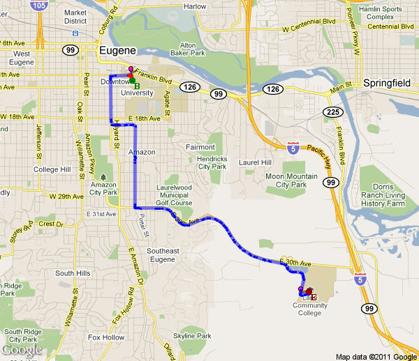

Directions for: 17-Oct-10 09_55.gpx
| | Start at 2310 McLean Blvd, Eugene, OR 97405, USA |
| Turn # | Distance | Turn | Street Name |
| 1 | 0.4 | right | Chambers St |
| 2 | 1 | right | Lorane Hwy |
| 3 | 13.1 | left | Territorial Rd |
| 4 | 19.1 | left | Territorial Hwy |
| 5 | 21.8 | straight | Territorial Rd |
| 6 | 23.1 | right | Territorial Hwy |
| 7 | 23.5 | left | Territorial Hwy |
| 8 | 27.8 | right | Curtin Rd |
| 9 | 28.8 | right | Umpqua Hwy |
| 10 | 34.2 | left | E B Ave |
| 11 | 34.8 | right | State Hwy 38 |
| 12 | 35.1 | right | Hwy 38 |
| 13 | 35.2 | left | Hwy 38 |
| 14 | 36 | left | Hayhurst Rd |
| 15 | 47.2 | straight | Metz Hill Rd |
| 16 | 58.7 | left | Green Valley Rd |
| 17 | 61.7 | right | Rochester Bridge Rd |
| 18 | 63.1 | straight | Stearns Ln |
| 19 | 66.5 | right | Oakland-Shady Hwy |
| 20 | 69 | right | S Calapooia St |
| 21 | 69.8 | straight | Oakland-Shady Hwy |
| 22 | 70.4 | straight | State Highway 99 |
| 23 | 70.5 | left | State Highway 99 |
| 24 | 70.8 | left | Oakland-Shady Hwy |
| 25 | 73 | straight | NE Stephens St |
| 26 | 74.6 | right | Wilbur Rd |
| 27 | 76.8 | right | Del Rio Rd |
| 28 | 79.4 | left | Garden Valley Rd |
| 29 | 82.5 | right | Melrose Rd |
| 30 | 87.5 | left | Colonial Rd |
| 31 | 91.9 | right | Coos Bay Wagon Rd |
| 32 | 100.8 | left | Reston Rd |
| 33 | 104.8 | right | Lockwood Rd |
|
End at 474 Lockwood Rd, Roseburg, OR 97471, USA
Total distance: 105.1 Miles | |
 |